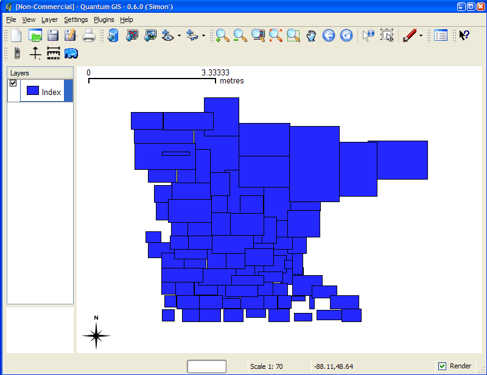
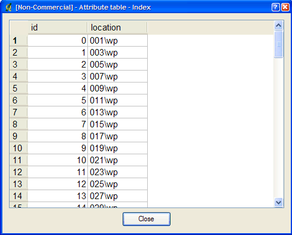

tile4ms¶
Purpose¶
Creates a tile index shapefile for use with MapServer’s TILEINDEX feature. The program creates a shapefile of rectangles from extents of all the shapefiles (.shp) listed in [metafile] (one shapefile name per line) and the associated DBF with the filename for each shape tile in a column called LOCATION as required by mapserv.
Note
Similar functionality can be found in the GDAL commandline utilities ogrtindex (for vectors) and gdaltindex (for rasters), that have the added benefit of supporting indexing of any supported GDAL driver/format. For more information (and detailed steps) see Tile Indexes.
Description¶
This utility creates a shapefile containing the MBR (minimum bounding rectangle) of all shapes in the files (actually shapefiles) provided, which can then be used in the LAYER object’s TILEINDEX parameter of the mapfile. The new filed created with this command is used by MapServer to only load the files associated with that extent (or tile).
Syntax¶
tile4ms <meta-file> <tile-file> [-tile-path-only]
<meta-file> INPUT file containing list of shapefile names
(complete paths 255 chars max, no extension)
<tile-file> OUTPUT shape file of extent rectangles and names
of tiles in <tile-file>.dbf
-tile-path-only Optional flag. If specified then only the path to the
shape files will be stored in the LOCATION field
instead of storing the full filename.
Short Example¶
Create tileindex.shp for all tiles under the /path/to/data directory:
<on Unix>
cd /path/to/data
find . -name "/*.shp" -print > metafile.txt
tile4ms metafile.txt tileindex
<on Windows>
dir /b /s *.shp > metafile.txt
tile4ms metafile.txt tileindex
Long Example¶
This example uses TIGER Census data, where the data contains files divided up by county (in fact there are over 3200 counties, a very large dataset indeed). In this example we will show how to display all lakes for the state of Minnesota. (note that here we have already converted the TIGER data into Shape format, but you could keep the data in TIGER format and use the ogrtindex utility instead) The TIGER Census data for Minnesota is made up of 87 different counties, each containing its own lakes file (‘wp.shp’).
We need to create the ‘meta-file’ for the tile4ms command. This is a text file of the paths to all ‘wp.shp’ files for the MN state. To create this file we can use a few simple commands:
DOS: dir wp.shp /b /s > wp_list.txt (this includes full paths to the data, you might want to edit the txt file to remove the full path) UNIX: find -name *wp.shp -print > wp_list.txt
The newly created file might look like the following (after removing the full path):
001\wp.shp 003\wp.shp 005\wp.shp 007\wp.shp 009\wp.shp 011\wp.shp 013\wp.shp 015\wp.shp 017\wp.shp 019\wp.shp ...
Execute the tile4ms command with the newly created meta-file to create the index file:
tile4ms wp_list.txt index Processed 87 of 87 files
A new file named ‘index.shp’ is created. This is the index file with the MBRs of all ‘wp.shp’ files for the entire state, as shown in Figure1. The attribute table of this file contains a field named ‘LOCATION’, that contains the path to each ‘wp.shp file’, as shown in Figure2.
Figure 1: Index file created by tile4ms utility

Figure 2: Attributes of index file created by tile4ms utility

The final step is to use this in your mapfile.
LAYER object’s TILEINDEX - must point to the location of the index file
LAYER object’s TILEITEM - specify the name of the field in the index file containing the paths (default is ‘location’)
do not need to use the LAYER’s DATA parameter
For example:
LAYER NAME 'mn-lakes' STATUS ON TILEINDEX "index" TILEITEM "location" TYPE POLYGON CLASS NAME "mn-lakes" STYLE COLOR 0 0 255 END END END
When you view the layer in a MapServer application, you will notice that when you are zoomed into a small area of the state (such as a single county) only those necessary lake shapefiles are loaded, which speeds up the application.